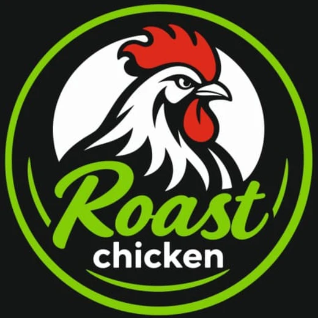

كل شي بتحتاجه لتشغّل منيو Roast chicken وتديره بنفسك: الأسعار، الأصناف، الصور، الطلبات عبر واتساب، والـ QR.
index.html صفحة المنيوconfig.js هون بتحط رابط جدول الأسعارqr.html صفحة بتعملك الـ QR لحالهاlogo.webp و icon.png الشعارmenu-sheet.csv كل الأصناف والأسعار، بتستورده على Google Sheetssheet-script.gs سكربت بيرتّب الجدول وبيضيف زر رفع الصوربتحتاج حساب Google (Gmail). الأحسن يكون حساب خاص بالمطعم.
menu-sheet.csv.sheet-script.gs بأي برنامج نصوص، انسخ كل محتواه والصقه مكانه.setupMenuSheet واكبس ▷ تنفيذ.على يسار الجدول في خانة حمرا اسمها الإعداد / القيمة. عبّيها:
| الإعداد | شو بتكتب | مثال |
|---|---|---|
| واتساب | رقم استلام الطلبات بالصيغة الدولية. بدونه زر "أرسل الطلب" بيضل مقفول. | +905xxxxxxxxx |
| هاتف | رقم الاتصال (اختياري) | +90324xxxxxxx |
| يفتح / يسكّر | أوقات الدوام بصيغة 24 ساعة. المنيو بيكتب "مفتوح الآن" أو "مسكّر". | 11:00 و 02:00 |
| التوصيل | نعم أو لا. إذا لا، بيختفي خيار التوصيل من الطلب. | نعم |
| العنوان | عنوان المطعم بكلمات | مرسين، شارع ... |
| رابط الخريطة | رابط المطعم من Google Maps (مشاركة ← نسخ الرابط) | https://maps.app.goo.gl/... |
| إنستغرام / فيسبوك | اسم الحساب أو الرابط | roastchicken |
أي خانة بتضل فاضية ما بتطلع بالمنيو.
output=csv. هاد الرابط رح تحطه بالموقع بالخطوة الجاية.GitHub بيستضيف الموقع مجاناً وللأبد، ورابطه بيكون باسم حسابك.
roastchicken أو roastchicken-mersin. هاد الاسم رح يصير جزء من رابط المنيو: https://roastchicken.github.io.github.io بالضبط. مثلاً إذا الحساب roastchicken بتكتب roastchicken.github.ioconfig.js، وبعدين أيقونة القلم ✏️ فوق على اليسار.sheet: بحيث يصير هيك:window.MENU_CONFIG = {
sheet: "https://docs.google.com/spreadsheets/d/e/.../pub?gid=...&single=true&output=csv"
};
https://اسم-حسابك.github.io. لازم يطلع المنيو.https://اسم-حسابك.github.io/qr.htmlالـ QR ما بيتغيّر أبداً حتى لو غيّرت الأسعار أو الأصناف، لأنه بيأشّر على الموقع، والموقع بيقرا من الجدول.
| بدك… | شو بتعمل |
|---|---|
| تغيّر سعر | بتغيّر الرقم بعمود السعر. |
| تخبّي صنف خلصان | بعمود متوفر بتختار لا. بيختفي من المنيو بدون ما ينحذف، وبترجّعه بـ نعم. |
| تضيف صنف | بتضيف سطر جديد: القسم، الصنف، السعر، متوفر = نعم. وإذا بدك اسمه بالتركي بتكتبه بعمود الصنف بالتركي. |
| تضيف خيارات (عادي/دبل، كامل/نصف، أحجام) | بتكتب نفس اسم الصنف بأكتر من سطر، وكل سطر بيختلف بعمود الخيار وبالسعر. المنيو بيجمعهم ببطاقة وحدة فيها كذا زر. |
| تضيف قسم جديد | بتكتب اسم القسم الجديد بعمود القسم، وبيطلعلو تبويب لحاله بالمنيو. |
| ترتّب الأصناف | المنيو بيمشي على ترتيب السطور بالجدول. انقل السطور لترتّب. |
| تحط صورة (من الكمبيوتر) | بتوقف على سطر الصنف ← قائمة 🍗 Roast chicken ← 📷 رفع صورة ← بتختار الصورة. |
| تحط صورة (من الموبايل) | بترفع الصورة على تطبيق Google Drive ← مشاركة ← أي شخص لديه الرابط ← نسخ الرابط، وبتلصقه بعمود الصورة. |
| تشيل صورة | بتمسح الرابط من عمود الصورة. |
| تغيّر رقم الواتساب أو الدوام | من خانة الإعدادات الحمرا. |
| تنسّق الجدول بعد ما ضفت سطور كتير | قائمة 🍗 Roast chicken ← 🎨 تنسيق الجدول. |
| تعطي موظف صلاحية التعديل | زر مشاركة بالجدول ← إيميله ← محرر. |
إذا غلطت بشي، من ملف ← سجل النسخ بترجّع أي نسخة قديمة.
الزبون بيختار أصنافه، وبيحدد بالصالة (مع رقم الطاولة) أو استلام أو توصيل (مع الاسم والعنوان)، وبيكبس "أرسل الطلب". بينفتح عنده واتساب ورسالة جاهزة فيها الأصناف والمجموع، وبيبعتها لرقم الواتساب يلي بالإعدادات. إذا الزبون تركي، الرسالة بتوصل بالتركي وجنب كل صنف اسمه بالعربي.
| المشكلة | الحل |
|---|---|
| غيّرت سعر وما تغيّر بالمنيو | استنى 5 دقائق، Google بيحدّث الرابط المنشور كل كم دقيقة. بعدها حدّث الصفحة. |
| المنيو عم يعرض الأسعار القديمة دايماً | تأكد إنه الرابط بـ config.js صح وآخره output=csv، وإنه الجدول لسا منشور، وإنه أسماء العناوين ما تغيّرت. |
| زر "أرسل الطلب" مقفول | رقم الواتساب فاضي بالإعدادات. |
| الصورة ما عم تطلع | تأكد إنه الصورة على Drive مشاركة "أي شخص لديه الرابط"، أو ارفعها من قائمة 🍗 Roast chicken. |
| رابط الموقع بيطلع 404 | استنى دقيقتين بعد الرفع، وتأكد إنه اسم المستودع اسم-حسابك.github.io بالضبط، وإنه index.html مرفوع مباشرة مو جوّا مجلد. |
| قائمة 🍗 Roast chicken مو ظاهرة | سكّر الجدول وافتحه من جديد. قائمة رفع الصور ما بتشتغل بتطبيق الموبايل، استخدم طريقة رابط Drive. |
roastchicken.com، بتشتريه من Namecheap أو Cloudflare (حوالي 10 دولار بالسنة)، وبتحطه من Settings ← Pages ← Custom domain. بعدها اعمل QR جديد من صفحة qr.html.